北陸廃村ツーリングと 2番目の取材旅
北陸廃村ツーリングと 2番目の取材旅
 富山県南砺市北原，栗当，________
富山県南砺市北原，栗当，________
____________高沼，草嶺，押場，奥大勘場，桂尾，中口，田ノ島，下原
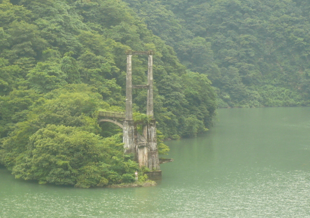
利賀村の入口，R.156沿い，庄川に架かっていた仙野原（せんのはら）大橋の橋げたです。
 2011/7/29 南砺市（旧利賀村）北原，栗当，高沼，草嶺，押場，奥大勘場，桂尾，中口，田ノ島，下原
2011/7/29 南砺市（旧利賀村）北原，栗当，高沼，草嶺，押場，奥大勘場，桂尾，中口，田ノ島，下原
［ 新潟県妙高市（旧新井市）寸分道 etc. ］
-
# 24-1
-
平成23年の前半は，市販のムック本「廃村をゆく」（イカロス出版刊，アドユー・企画編集室 編集制作）への協力と私家版の資料集「廃村と過疎の風景（５） ～ 廃村 千選Ⅱ －西日本編－」の制作で，多忙な日々が続きました。完成が同時期（平成23年5月下旬）になったこともあって，多くの方の協力をもとに進める作業と，単独で進める作業の違い，その良い所，難しい所など，多くのことを実感しました。
この2冊の完成と同時に，市販本の制作に係わることで得た記事づくりのノウハウを活用すべく，平成24年中の完成予定で次の私家版「廃村と過疎の風景（６）－集落の記憶－」の制作を本格化させることになりました。
-
# 24-2
-
「廃村と過疎の風景（６）－集落の記憶－」は，当初「廃村 千選Ⅰ －東日本編－」，「廃村 千選Ⅱ －西日本編－」で県別でまとめた全国の廃校廃村・高度過疎集落1000か所を，農山村，戦後の開拓集落，鉱山集落，林業専業集落，炭鉱集落，離島（半農半漁）という産業別にまとめ直した資料集「廃村 千選Ⅲ －産業別編－」として企画しました。冬季分校関係，へき地5級地，ダム関係というテーマ別の分類と，旅行記を2本掲載する計画でした。
しかし，それだけでは魅力があるものとはなりません。いろいろ考えた結果，「代表的な廃校廃村を何か所か取り上げて，住まれていた方に往時の話をうかがい，写真をお借りして，記事をまとめる」という企画を思い付き，これを「集落の記憶」として，冊子の目玉の記事にすることになりました。
-
# 24-3
-
平成23年1月頃，「集落の記憶」で取り上げる廃校廃村は，農山村，戦後の開拓集落，鉱山集落，林業専業集落，炭鉱集落，離島（半農半漁），冬季分校関係，へき地5級地，ダム関係，再生した集落で1か所ずつ，計10か所（約20ページ）だったのですが，「廃村 千選Ⅱ －西日本編－」が完成して，最初の取材を行った頃（平成23年5月下旬）には，「全国各所」という要素を加味したくなり，計18か所（約50ページ）にふくらみました。
基本的な記事の内容やレイアウトは，最初の取材の旅（愛媛県中之川，徳島県空野）の記事を編集する中で作っていきました。そして，最初のページ見本（徳島県空野）ができたのは旅の1か月後（平成23年6月下旬）のことで，「集落の記憶」というサブタイトルが定まったのもこの頃です。
-
# 24-4
-
「集落の記憶」の取材は，愛媛県中之川では鎌倉重清さん，徳島県空野では田浦春夫さんというように，往時住まれていた方の力添えが必要不可欠です。これまで全国各地の廃村に出かけて，多くの方に出会うことができたから立ちあがった企画といえます。
平成23年7月下旬，大阪・堺の実家にあるバイクを埼玉・浦和の自宅に移動させることを主目的として計画した北陸方面6泊7日ツーリングでは，道中「集落の記憶」の取材も積極的に進めるべく調整しました。結果，旅の1週間前には，計4か所（岐阜県鶴見・東杉原，福井県中島・上笹又，富山県北原・長崎，長野県沓津）の取材の予定が立ちました。廃校廃村の密度が高い北陸をバイクで訪ねるので，約40か所の廃校廃村を訪ねる予定となりました。
-
# 24-5
-
平成23年7月25日（月，旅1日目），天気は日中は晴，夕方から曇時々雨。滋賀県旧高島町で滋賀民俗学会の菅沼晃次郎さんとお会いして，旧木之本町 土倉を訪ねました。岐阜県旧藤橋村親，鶴見を過ぎて，宿泊は平成16年10月に昼食で立ち寄ったことがある東杉原の簡易宿泊所「すぎはら」です。
7月26日（火，旅2日目），天気は朝方曇時々雨，日中概ね晴。朝は，鶴見・東杉原の「集落の記憶」の取材を「すぎはら」の女将 島岡範子さんの協力を受けて行いました。この日は，R.157温見峠を経由して福井県大野市まで行く予定でしたが，通行止のため，急きょR.156油坂トンネル越えのルートに変更しました。宿泊は大野市の魚吉商店。中島に立つ自治体規模の廃村 旧西谷村の案内板は，場所と文はそのままで新しいものに替わっていました。
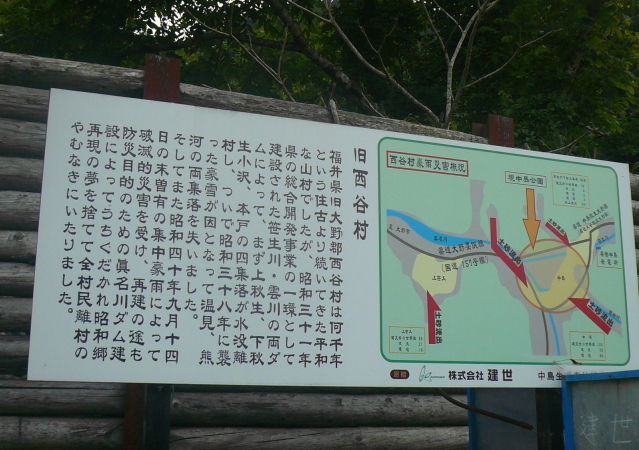
-
# 24-6
-
7月27日（水，旅3日目），天気は昼過ぎまで曇時々晴，夕方から雨。朝は，旧西谷村中島・上笹又の「集落の記憶」の取材を平成12年以来の縁の魚吉商店の吉田吉次さんの協力を受けて行いました。この日は，勝山市の廃校廃村を5か所訪ね，R.157谷トンネルを越えて石川県に入り，旧白峰村の廃校廃村を4か所訪ねました。宿泊は旧吉野谷村のかつて夏季分校があった中宮温泉「にしやま旅館」です。
中宮小学校（のち吉野谷小学校）温泉夏季分校は，児童数6名（S.34），昭和25年開校，昭和54年閉校。現在，学校跡は中宮温泉ビジターセンターになっています。宿のご主人（西山喜一さん）は温泉夏季分校出身。謎に思っていた閉校時期は，「実質的には昭和40年頃には閉まっていた」とのことです。
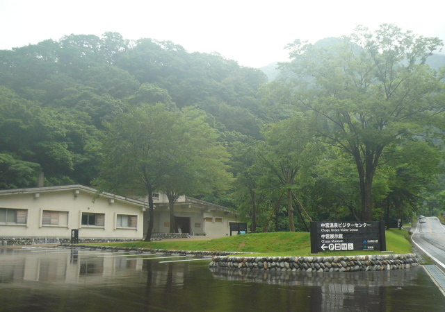
-
# 24-7
-
7月28日（木，旅4日目），天気は朝方雨，昼前から曇。朝は，中宮温泉ビジターセンターを訪ね，夏季分校を再現した展示を見学しました。この日は，R.157で一度金沢市街に出て，金沢市内の廃校廃村を3か所訪ね，刀利峠を越えて富山県に入り，旧福光町刀利，旧城端町上田，旧平村梨谷を訪ねました。宿泊は旧利賀村北原（Kitabara）の温泉民宿「利賀乃家」で，平成21年2月以来，2年半ぶり2度目です。
上田，梨谷の探索，「利賀乃家」の宿泊は，平成6年の北海道の旅で知り合った，石川県在住，富山県在勤の友人（山崎惟且さん）が付き合ってくれました。山崎さんは，離村記念碑が建つだけの上田，家屋は残るものの無人となった梨谷に，どこかなつかしさを感じたとのことです。
-
# 24-8
-
7月29日（金，旅5日目）の起床は朝6時頃。天気は小雨。朝食をとって「出勤する」という山崎さんを見送り，朝の探索も雨のため見送りになりました。
北原・長崎の「集落の記憶」の取材は朝9時頃から，「利賀乃家」の吉田與十郎さん，妙子さん，與正さん，あや子さん，「ながさき家」の野村容子さん，みどりさんの協力のもと始めました。皆さんは前日から備えていたとのことで，「昔の話をするのに，よい機会だった」と喜んでいただけました。
利賀小学校北原分校は，へき地等級２級，児童数18名（S.34），明治35年開校，昭和46年休校，昭和60年閉校。戸数の変遷は4戸17名（S.30）が1戸3名（S.50）。残る1戸が「利賀乃家」です。吉田與十郎さん，妙子さんに見送られながら「利賀乃家」を出発したのは朝10時頃。幸い雨は上がっていました。
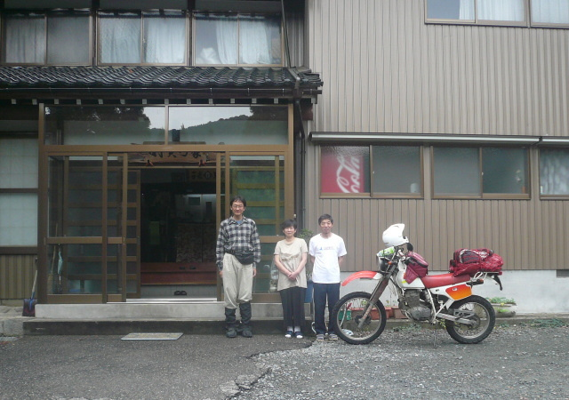
-
# 24-9
-
旧利賀村には廃校廃村が13か所もあり，平成の大合併前の自治体では全国一です。今回はこのうちの10か所を一気に回ります。
北原からは長崎大橋を渡り，砺波市（旧庄川町）小牧ダムを経由し，R.471沿いの廃校廃村を目指しました。旧利賀村で2番目に訪ねた栗当（Kuritou）は，スノーシェッドに名前があるものの，集落跡の位置ははっきりしません。
利賀小学校高沼分校栗当冬季分校は，へき地等級２級，児童数10名（S.34），昭和10年開校，昭和42年閉校。戸数の変遷は6戸56名（S.30）が2戸6名（S.50），離村は昭和54年。栗当地内には脇谷のトチノキという天然記念物があり，その奥には無人の家屋が建っていました。
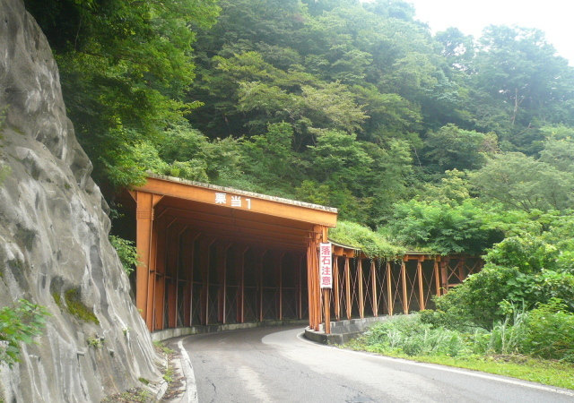
-
# 24-10
-
3番目に訪ねた高沼（Takanuma）では，バス停前に1戸の家屋があり，RC造2階建ての分校跡の校舎が見当りました。
家屋の前に停まっていたクルマは置き薬売りの方のもので，話をすると，高沼には3戸ほどの家があるが，常時住まれるのはバス停前の1戸のみとのこと。また，村の南部 奥大勘場の分校跡には，住まれる方がいるとのことで，どんな様子なのか，楽しみになりました。
利賀小学校高沼分校は，へき地等級２級，児童数52名（S.34），明治35年開校，昭和53年休校，平成8年閉校。戸数の変遷は17戸105名（S.30）が3戸13名（S.50）。 校舎（昭和46年建設）の入口から窓越しに中を覗くと，「高沼体験学習施設」という看板が見えました。
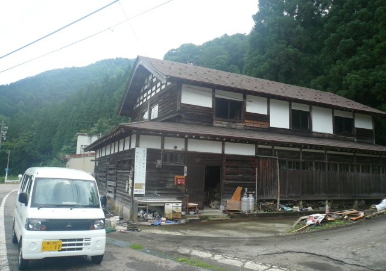..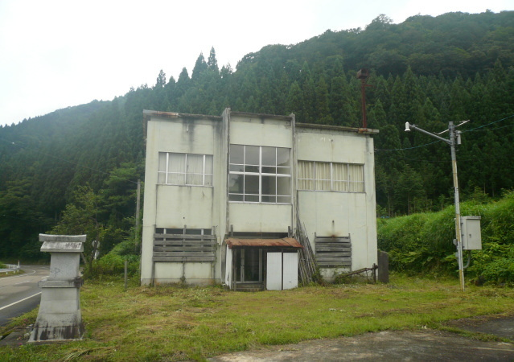..
-
# 24-11
-
4番目に訪ねた草嶺（Sourei）は高沼の南側約2kmにある小集落です。2kmほどの距離でも冬季分校が開かれていたということは，往時の積雪期の交通の不便さが想像されます。
利賀小学校高沼分校草嶺冬季分校は，へき地等級２級，児童数10名（S.34），昭和10年開校，昭和52年閉校。戸数の変遷は12戸88名（S.30）が2戸15名（S.50），離村は平成11年。R.471から少し入った場所には木彫りの獅子が見事な村の鎮守様（草嶺神明宮）があり，数戸の無人家屋が見当たりました。草を刈る方（おそらく自治体関係の方）に声をかけようと思ったのですが，作業が終わったところのようで，すれ違いとなりました。
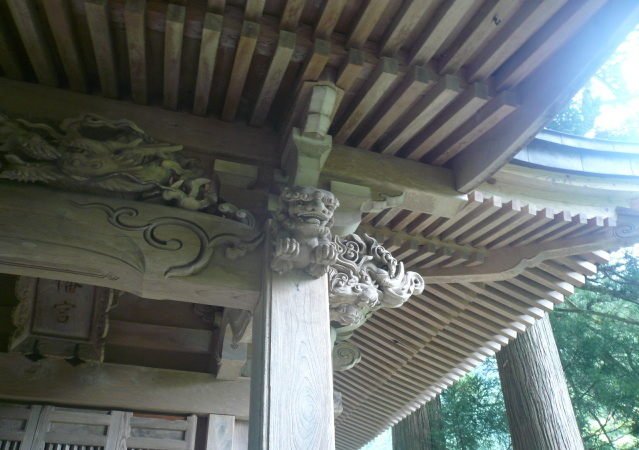
-
# 24-12
-
5番目に訪ねた押場（Oshiba）と草嶺も3kmほどしか離れていません。利賀小学校北豆谷分校押場冬季分校は，へき地等級２級，児童数11名（S.34），昭和5年開校，昭和43年閉校。戸数の変遷は8戸59名（S.30）が3戸13名（S.50），離村は平成12年。押場はR.417からは枝道を少し入った場所にあります。枝道を下っていくと，左手に草に埋もれた鎮守様（押場八幡宮）が見当たり，道の終点には大きな廃屋が建っていました。
利賀村の中心部は，R.416と主要地方道利賀河合線の分岐点あたりですが，人家はまばらです。今も存続する利賀小学校（本校）は，へき地等級２級，児童数86名（S.34）でした（現在（H.23）は30名）。なお，昭和34年，利賀村の小学校は全部で21校ありました（本校1校，分校11校，冬季分校9校）。
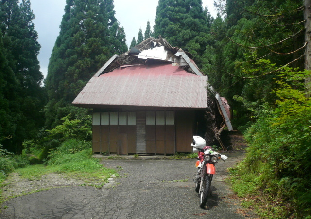..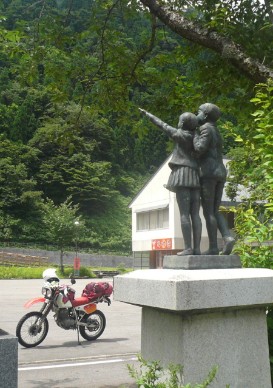..
-
# 24-13
-
利賀村中心部から主要地方道に入って，坂上（Sakagami）の辺りで利賀川の流れが道に近付き，「スターフォレスト利賀」という看板が見当たりました。立ち寄ってみると，小学校跡の校舎を改装した宿泊施設で，「おやき」の看板などもありましたが，人の気配は皆無でした。
利賀小学校坂上分校（のち坂上小学校）は，へき地等級３級，児童数62名（S.34），平成8年閉校。戸数の変遷は48戸252名（S.30）が39戸184名（S.50）。坂上は利賀村の中では開けた感じがする集落で，昭和43年建設の校舎はRC造3階建て，学校跡の碑と児童像が立つ校庭は広々としています。ちょうどお昼時となったので，私は校庭の片隅に座って，道の駅利賀で買ったトチモチを食べました。
-
# 24-14
-
坂上に続く集落 阿別当（Abettosu）から奥大勘場（Okutaikanba）までの約8kmの間には，田ノ島，中口，桂尾と，廃校廃村が3つもあります。まず所在がはっきりしている3戸の集落 奥大勘場を訪ねました。奥大勘場よりさらに約8km先の廃校廃村 水無は，今回は，時間の都合で行くことができません。
利賀小学校奥大勘場分校（のち坂上小学校大勘場分校）は，へき地等級４級，児童数15名（S.34），昭和10年開校，昭和51年休校，平成8年閉校。昭和50年の戸数は8戸35名。分校跡の校舎（昭和47年建設）に住まれるおばさんにもお会いすることができました。お話を伺うと，夏季以外は市街地の家で過ごされるそうです。奥大勘場は阿別当からのオンデマンドバスの終点ですが，大勘場バス停は久しく使われていないことを表すように傾いていました。
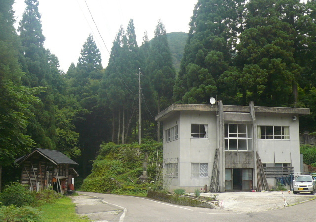
-
# 24-15
-
7番目に訪ねた桂尾（Katsurao）は，奥大勘場の2kmほど手前，6戸の集落 千束（Senzoku）から1㎞ほどの場所です。
利賀小学校大勘場分校桂尾冬季分校は，へき地等級３級，児童数9名（S.34），昭和20年開校，昭和40年閉校。昭和50年の戸数は3戸7名。離村は昭和末頃。集落ははっきりとはわからなかったのですが，奥大勘場のおばさんのお話で，昌栄橋と利賀川第二発電所のダム管理所の間辺りにあったそうです。
往時は千束にも分校がありました。利賀小学校大勘場分校（のち坂上小学校千束分校）は，へき地等級３級，児童数54名（S.34），昭和59年休校，平成8年閉校。昭和50年の戸数は8戸31名。RC造3階建ての分校跡の校舎（昭和45年建設）の入口には，個人名の郵便入れが置かれていました。
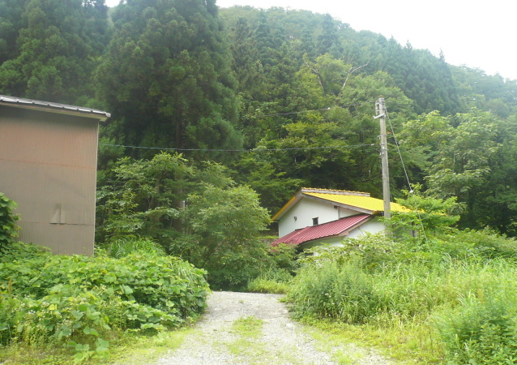..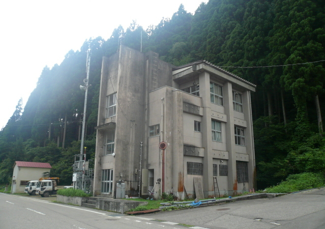..
-
# 24-16
-
8番目に訪ねた中口（Nakaguchi）は，千束の1kmほど手前，田ノ島の分岐（バス停）から1㎞ほどの場所です。利賀小学校大勘場分校中口冬季分校は，へき地等級３級，児童数16名（S.34），昭和28年開校，昭和40年閉校。昭和50年の戸数は2戸3名。離村は平成初頃。中口は，私が訪ねた「廃村千選」で300か所目の廃校廃村となりました。
奥大勘場のおばさんの話で，建設業の事務所がある場所とわかったので，訪ねてみると事務所の方（おじさん）が屋根の修理をされていました。おじさんの話によると，ここに6戸の集落があり，千束までの雪道に危険な箇所があるので，冬季分校が民家に開設されていたとのこと。
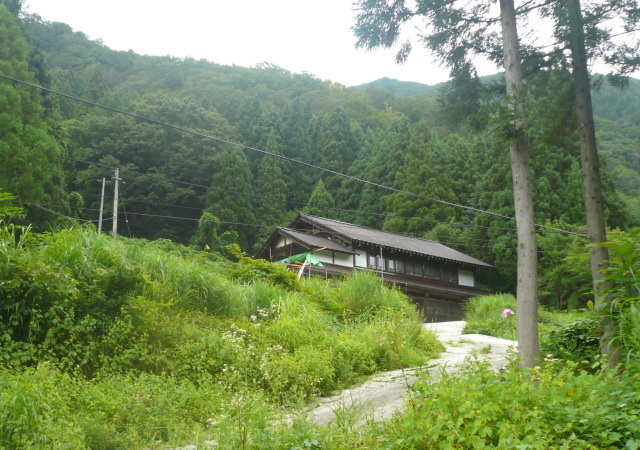
-
# 24-17
-
9番目に訪ねた田ノ島（Tanoshima）は，阿別当から3kmほどの場所にあり，利賀川沿いには田の島バス停が立っています。2戸見当たった家屋のうち1戸は，宝仙学園（東京の大学）のアトリエ（教室）として使われています。
利賀小学校大勘場分校田ノ島冬季分校は，へき地等級３級，児童数16名（S.34），昭和10年開校，昭和40年閉校。昭和50年の戸数は1戸6名。離村は昭和53年。田ノ島を訪ねて，利賀村の廃校廃村13か所中11か所の訪問ができました。ちなみに旧利賀村は面積176平方km，戸数の変遷は478戸3219名（S.30）が329戸1472名（S.50），267戸661名（H.22），近年の5年間（H.17-H.22）の人口減少率（マイナス23％）は富山県で最大です。
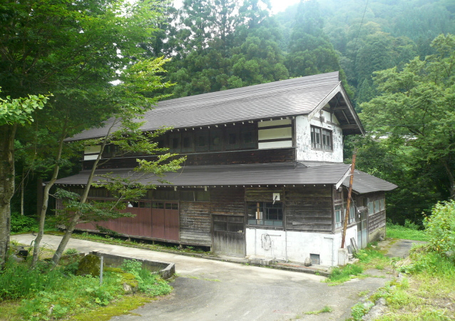
-
# 24-18
-
田ノ島からは，新山の神トンネルを越えて旧平村，R.156に入り，迷いながら「廃村千選」のリストから外した3戸の過疎集落 渡原（Donohara）を目指しました。庄川沿いの渡原バス停で左に折れ，すぐ右に折れて坂を上がると，わずかな平地の中に現住家屋，冬季分校跡の校舎，鎮守様が見つかりました。雰囲気を味わおうと，しばし歩いて探索です。
東中江小学校杉尾分校渡原冬季分校はへき地等級２級，児童数は昭和34年が8名，昭和44年が4名，昭和47年は開設されずです。「平村史」を調べると，この木造2階建ての校舎は昭和32年に建ったものとわかりました。
 ..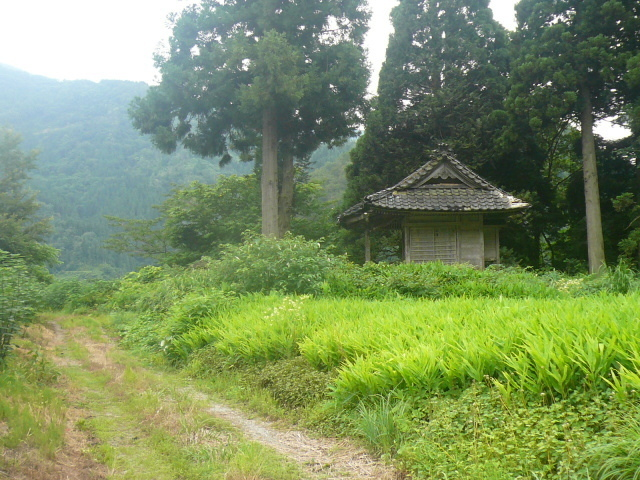..
..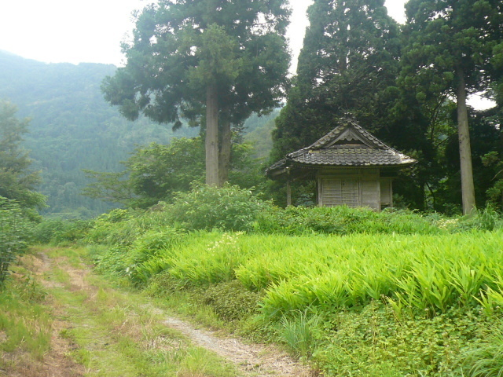..
-
# 24-19
-
渡原からは，昨日も通ったR.156を走り，2戸の高度過疎集落 下原（Shimobara）に，2年半ぶりに立ち寄りました。利賀小学校栃原分校下原冬季分校（のち下原分校）は，へき地等級２級，児童数16名（S.34），昭和10年開校，昭和61年休校，平成23年3月閉校。戸数は11戸90名（S.30）が6戸32名（S.50）。かんぽの宿の跡は，更地に変わっていました。
長崎大橋よりやや下流では，北原の「集落の記憶」の取材で話題になった仙野原大橋（昭和5年建設，のち利賀大橋，昭和40年代に通行不能になる）の橋げたを確認することができました。
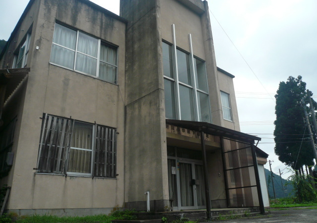
-
# 24-20
-
山深い下原から15kmほどの北陸道砺波ICに到着したのは午後3時35分。この日の宿，ペンション「びっくりりえたん」があるのは長野県木島平村。日暮れまでの到着を目指して，急ぎ気味で上信越道上越高田ICまで走りました。
途中，新潟県妙高市除戸のR.292から枝道を入ると寸分道（Sunbundou）という廃校廃村があるので，急ぐ気持ちとは裏腹に寄り道をしてしまいました。
平丸小学校寸分道分校は，児童数9名（S.34），昭和15年開校，昭和56年閉校。寸分道に住まれる家は3戸ですが，仏ヶ峯温泉「深山の里」という観光施設があり，風通しは良さそうです。高台にある白っぼい2階建ての分校跡の校舎は，町工場のように見えました。
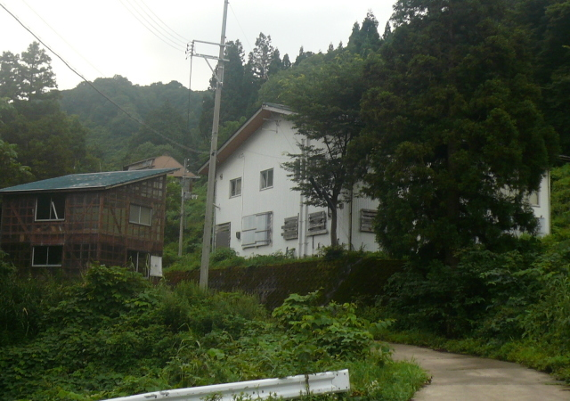
-
# 24-21
-
寸分道からは，急いでR.292に戻り，長野県飯山市を横断。R.403の千曲川中央橋を渡ったあたりで日が暮れて道に迷い，宿到着は夜7時15分でした。 宿では，keiko（妻）と合流。朝9時半頃浦和を出発し，上信越道松井田妙義IC，軽井沢，菅平経由で，木島平は夕方6時頃到着したとのこと。
7月30日（土，旅6日目），天気は午前中雨時々曇，午後曇，夕方から雨。飯山市沓津の「集落の記憶」の取材は，平成17年夏以来の縁がある佐藤長治さんの協力を受けて行いました。沓津に足を運ぶのは今回で11回目ですが，さらに新たな神様（権現様）を紹介していただくことになりました。
沓津からは，悪天のため渋峠越えをあきらめて，菅平，鳥居峠経由で，この日宿泊の川原湯温泉「丸木屋」がある群馬県長野原町へと向かいました。
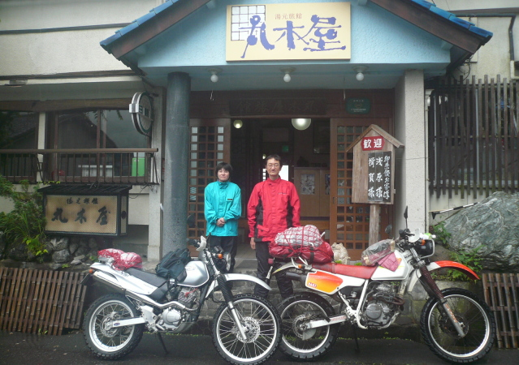
-
# 24-22
-
そして7月31日（日，旅最終日），天気は午前中雨，午後は曇。川原湯温泉というと八ッ場ダムですが，およその工事はできあがっていて，肌で感じた雰囲気では，ダム建設へと動きそうでした。悪天ということもあり，川原湯温泉から浦和までは寄り道なし，高速なし，バイク2台で淡々と帰りました。
大阪・堺から埼玉・浦和まで，7日間のツーリングの走行距離（累計）は1331km，訪ねた廃校廃村は40か所（初訪28か所，再訪12か所）となりました。
「集落の記憶」の取材も，道中4か所，無事に成し遂げることができました。最初に取り組んだ四国の2か所，同時期に動いた3か所（山口県向畑，北海道鹿島，北海道東和開拓（取材は成瀬健太さん））を含めて，9月末には計9か所（全体の半分）の記事の目鼻が整いました。
-
(追記) 北陸廃村ツーリングの記録は，5日目の旧利賀村の廃校廃村（10か所）に絞り込む形でまとめました。追記として，2日目から4日目に訪ねた廃校廃村26か所の名前と，6か所の画像を紹介します。
★2日目（7/26（火））
・初訪：岐阜県旧美山町西洞，福井県旧和泉村久沢（2か所）
・再訪：岐阜県旧徳山村徳山本郷，福井県旧和泉村東市布，下半原，大谷，伊勢，旧西谷村中島，大野市上若生子（7か所）
画像左：岐阜県山県市（旧美山町）西洞（Nishibora）
金色の馬が印象的な「西洞の人家分布図」の石碑（平成7年建立）。
画像右：福井県大野市（旧和泉村）久沢（Kuzawa）
赤御影の「ふる里之碑」（昭和58年建立）。
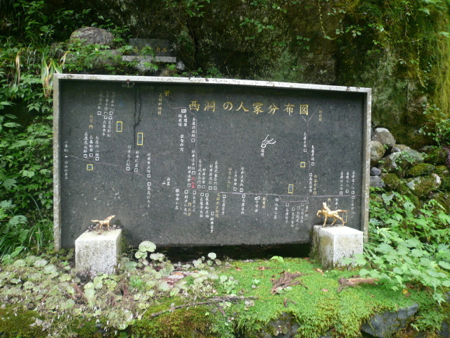..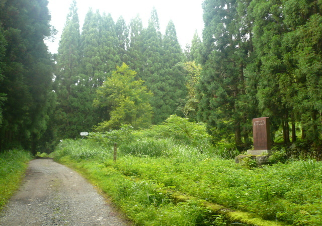..
★3日目（7/27（水））
・初訪：福井県勝山市岩屋，横倉，杉山，中野俣，小原，石川県旧白峰村大道谷，赤岩，河内谷，下田原，旧吉野谷村中宮温泉（10か所）
画像左：福井県勝山市杉山（Sugiyama）
分校跡の校舎（北谷小学校杉山分校は，明治20年開校，平成2年休校，平成10年閉校）。
画像右：石川県白山市（旧白峰村）河内谷（Kouchidani）
集落跡付近に建つログハウス（校舎が残るという分校跡は見つからず）。
 ..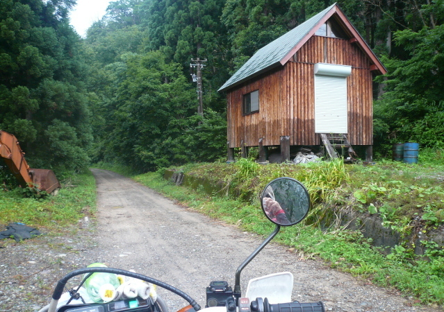..
..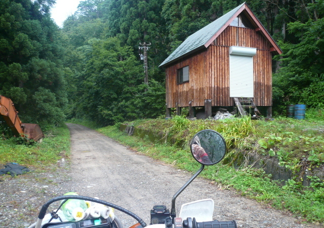..
★4日目（7/28（木））
・初訪：石川県金沢市栃尾，菱池小原，横谷，富山県旧福光町刀利，旧城端町上田，旧平村梨谷（6か所）
・再訪：富山県旧利賀村北原（1か所）
画像左：石川県金沢市栃尾（Tochio）
分校跡。イヌが寝ている部分が入口の名残り（湯涌小学校栃尾分校は，昭和33年開校，昭和46年閉校）。
画像右：富山県南砺市（旧福光町）刀利（Touri）
「土徳刀利郷」の石碑。解村50周年（＝平成21年）の事業で建ったとのこと。
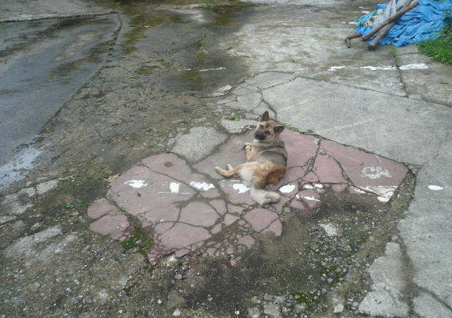..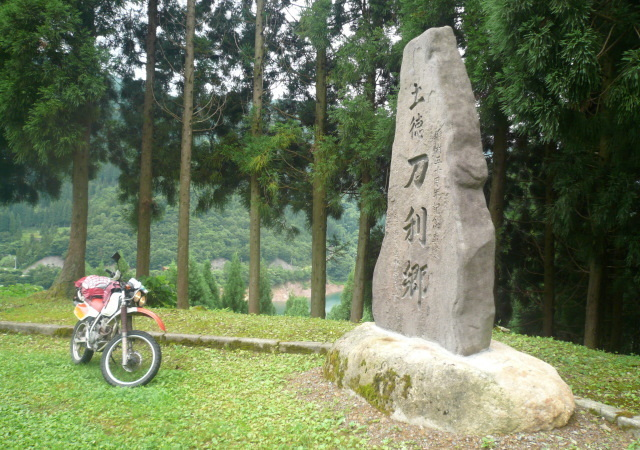..
 「廃村と過疎の風景(7)」ホーム
「廃村と過疎の風景(7)」ホーム


{kind=link}
{kind=link}
{kind=link}
{kind=link}
{kind=link}
{kind=link}
{kind=link}
{kind=link}
{kind=link}
{kind=link}
{kind=link}
{kind=link}
{kind=link}
{kind=link}
{kind=link}
{kind=link}
{kind=link}
{kind=link}
{kind=link}
{kind=link}
{kind=link}
{kind=link}
{kind=link}
{kind=link}